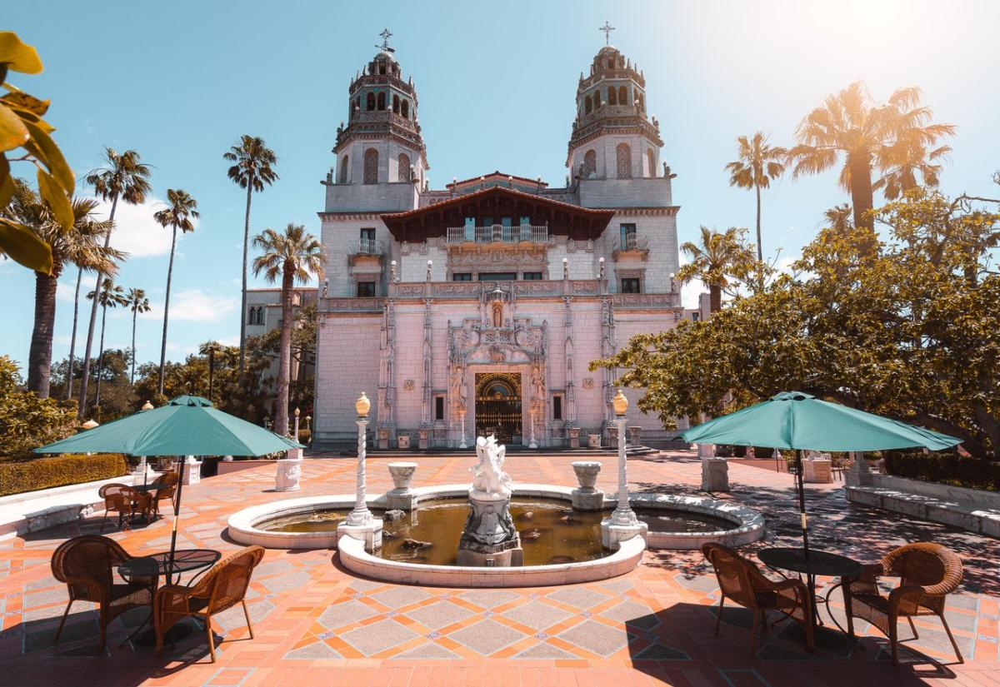
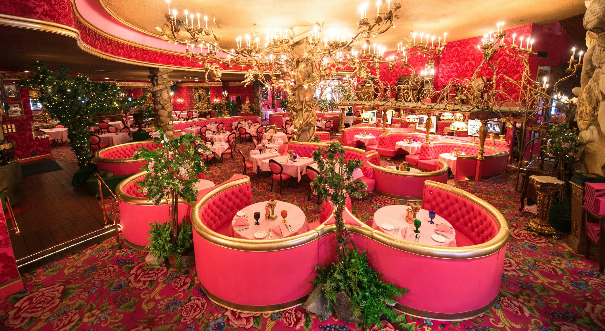
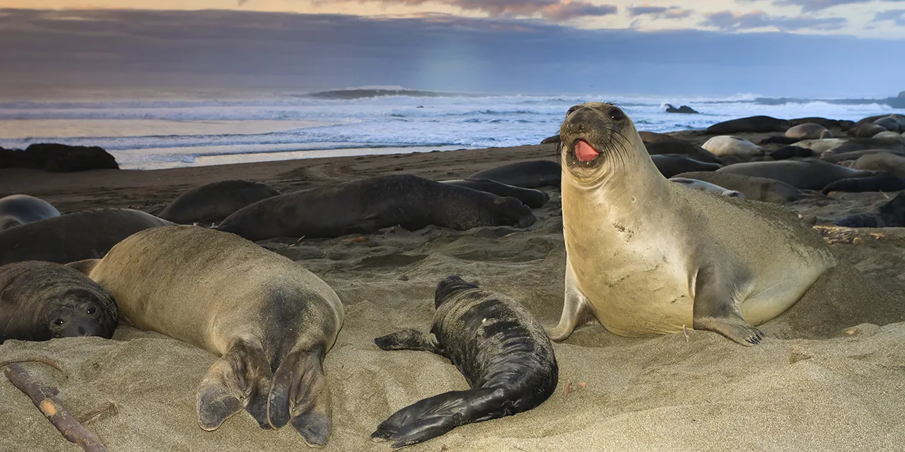

Some of my favorite attractions to visit here:
This stunningly detailed estate was designed by William Randolph Hearst and his architecht Julia Morgan, the first woman to become a licensed architect in California. It has since become a historic landmark as the public can take tours through its many features. Tours range from exploring the gardens and both swimming pools to viewing the kitchen and bedrooms. The estate also features three guest houses, Casa Del Mar, Casa Del Monte, and Casa Del Sol, as well as the main house Casa Grande
Pismo Beach has many qualities that make it a prime spot to visit. For one the beaches sandy dunes which you can drive through in an ATV. The beaches piers also act as a great viewing spot to watch the sunset. Pismo beach also has an abundance of clams making it the "clam capital of the world" you can find these clams at many restaurants which serve delicious clam chowder.

This hotel, created by Alex Madonna, is best known for its quirky design, both inside and out. Its exterior resembles a whimsical and fantastical style mixed with swiss architecture. Its many rooms each have a different theme and style, with such styles being, Bridal Falls, Caveman, Jungle Rock, Hearts and Flowers and many many more.
This marine reserve is located just offshore of San Luis Obispo County. Within its boundary, every species of marine animal is protected. Here visitors can watch these elephants seals on the beach for free. Elephant seals are typically visible on the beach year round, though numbers fluctuate each season.
| Attraction | Category | Cost | Time needed |
|---|---|---|---|
| Hearst Castle | Historic landmark | $35-$50 (adult tickets) | 2-3 hours |
| Pismo Beach | Nature/outdoors | $0 (ATV rental $55-$80+) | 2-3 |
| Madonna Inn | Hotel/dining | $150-$400/per night | Overnight stay |
| Piedras Blancas Elephant Seal Rookery | Nature/outdoors | $0 | 30-60 minutes |